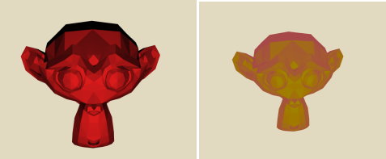
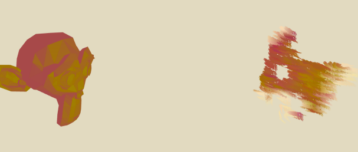

This project was a self-directed graphics project with the goal of delving into the world of Non-Photorealistic Rendering, or NPR. I aimed to create a shader which was able to create the appearance of a painted scene utilizing artistic techniques with shaders in realtime. For research, I used refrence papers " Paint By Numbers: Abstract Image Representations " by Paul Haeberli and Amy and Bruce Gooch's " A Non-Photorealistic Lighting Model for Automatic Technical Illustration ." I implemented the NPR shaders in Opengl using C++, GLFW, and GLEW, as well as the boilerplate provided by Opengl Tutorial.
A showcase of the result of my work is shown below. Beneath that, I have some documentation of my progress on the project and how I achieved my results. Finally, I also speculate on alternate avenues for achieving artisitc effects through shaders.
This being one of my first major projects with OpenGL rather than webGL, I began first by learning OpenGL. For this I used the online resource opengl-tutorial.org, which I can highly recommend as it provides all the necessary basics you might need for getting started with any OpenGL project. Since there's a lot that goes into a build system (and since I didn't want to spend time debugging build problems), I used the CmakeLists and project structure provided by the tutorial website. In the end, this added a lot of bloat to my project structure, so for anyone begining with OpenGL, I recommend using this site for setting up the build system for your own projects.
The tutorial's code provided all the necessary baseline code for rendering 3D objects with a camera. It also provided simple lighting with the Phong Illumination model in some shaders. So now, I had to decide on how to approach the problem of rendering brushstrokes in realtime for my shader. I had initially thought about drawing individual brushstrokes on a texture using samples from the scene rendered to texture, however, doing this would be difficult to do in parallel on the GPU, as each brush stroke would have to be layered on the same shared texture. In addition, this would also create a new brush texture each frame, sure to be extrememly expensive.
I tried a few approaches by creating the textures on the CPU, but ultimately they fell through, looking fairly bad with poor performance. I moved on to creating a modified illumination model for rendering. For this, I used the Gooch Illumination model to render objects in a more artistic way.
 The Gooch Illumination model works, at a high level, by taking what would normally be in darkness and adding cool tones to the model, while adding warm tones to the illuminated side. This is what artists normally do in their work, and for my rendering, it resulting in a more pleasing appearance that is softer on the harsh shadows of the Phong lighting model.
With the Illumination model much improved, I returned to the problem of rendering brush strokes. Originally, I wanted to update the brushstrokes on each frame to align with the form of model, however, I couldn't see a way to do this without creating a new texture on each frame. So instead, I decided to create a static texture of brushstrokes and change the color of them as the rendered scene changes.
Creating a static frame of brush strokes simplified the
problem significantly. I would create a series of quads
in screen space that each had a brush stroke texture.
I created the quads on the CPU
with a set of parametrizable variables,
such as BRUSH_SIZE, BRUSH_SIZE_VARIANCE,
ANGLE, ANGLE_VARIANCE, and COLOR_VARIANCE.
Brush size is pretty self explanatory, being the size of an individual brush stroke.
Angle is the angle at which the
brush strokes would be applied on the screen. Color variance is the range
at which a random amount of color would be added to brush stroke.
Variance for size and angle also added a random amount to the brush size and
angle within a given range.
To render the result, I simply had to render the scene I had previously to texture, then read from that texture in the brush stroke shaders. To make sure each brush stroke had fairly uniform color, I would sample the rendered texture only at the vertices of the brush stroke. The results are shown below.
As you can see, this resulted in some strange shadow-like artifacts on the final render. This effect was particularly apparent with larger brush sizes. I found that the problem came from some brushstrokes in the lower right having a majority of the brush stroke quad with the background color value, but one or two values of the object itself. This resulted in a blended color between the two for a brush stroke. A somewhat poor solution to this problem, I simply discarded all fragments that had a color close to the background color.
After fixing that, the shader really came together. Playing with the parameters to the brush strokes a bit, I came to some good looking renders:
Also some renders that were more just fun to look at and play around with.
 Lastly, I tried to implement having the brush strokes align with the form of the model. To do this, I tried to align each brush stroke with the tangents and bi-normals of the model in screen space. However, my implementation had some problems with it, resulting in some strange effects.
While I am fairly proud about how this project turned out, I do think there are likely far better ways to get a painterly like effect in realtime. The most obvious way is to simply have textures that an artist creates that are painterly in nature, however, for effects that seem to blend the whole scene in one painting, I doubt textures alone would suffice.
I recently saw a video on creating artistic paint-like effects on YouTube, where an artist would create normals which would have the shape of brush strokes with uniform color. This is definitely more in line with having effects in realtime, as there is essentially no cost to the render. If I were to approach this project in the future again, I might try doing something with normals to get the desired effect. Perhaps by rendering the scene's normals to texture, blurring them, then applying brush strokes on a texture based on the blurred normal texture. Fine details could be shown with a second pass for small brush strokes with closser objects.